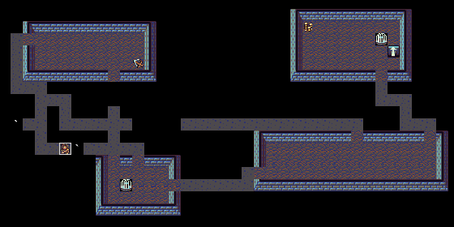

Hack, stitched together over the net · the first public NetHack
> Enter the dungeonNetHack is built on the code of Hack. Its README calls it “an integrated version of two major flavors of Hack”: Andries Brouwer's Unix Hack 1.0.3 and Don Kneller's PC Hack. Mike Stephenson merged the two, took the file names from PC Hack, and folded in patches that other players had posted: new classes, fountains, Keystone Kops, spiders, a magic marker. Each addition is still a switch in config.h.
1.3d was the first public release. Later versions (2.x, 3.x) grew from it, and so did the many variants in the family tree. This page's game is “NetHack 1.3d Revived”, a 2007 patch set that makes the 1987 source build on modern Linux.
| Mike Stephenson | Merged the Hack flavours into NetHack; new classes and traps, throne rooms, spellbooks and spellcasting, praying, endgame changes |
| Ken Arromdee | New classes, weapons code, armour weights, tools, polymorphing yourself |
| Scott R. Turner | Rock moles, Keystone Kops, squeaky boards and magic traps, fountains |
| Gil Neiger | Magic marker, fountain improvements |
| Eric Backus | #dip for fountains |
| Jay Fenlason, Andries Brouwer, Don Kneller | Hack, Hack 1.0.3 and PC Hack, the code underneath |
| NetHack 1.3d Revived (2007), bhaak | Patches that make it build on modern Linux; GitHub copy (bhaak/NetHack-1.3d @ bcec982) |
| DragonDePlatino, DawnBringer | DawnLike tiles (CC-BY 4.0); the NetHack 3.6 tiles are the alternative |

More screenshots to come: our capture tool does not yet record the text windows.
.c/.h files. Files are named in the short PC Hack style: shk.c, dog.c, fountain.c, pray.c.#define in config.h (SPELLS, PRAYERS, KAA, KOPS, FOUNTAINS, …). The tool makedefs reads objects.h and writes the item defines, honouring those #ifdefs.| Thing | Count | Notable ones |
|---|---|---|
| Classes | 12 | The Samurai and Ninja; the Elf is a class, not a race. |
| Monsters | 62 | The Keystone Kop, the quantum mechanic, the rock mole, the giant eel, the mail daemon and the wizard of Yendor. |
| Spells | 33 | Finger of death, create familiar, genocide, cone of cold. |
| Potions | 19 | Gain energy, hallucination, holy water. |
| Scrolls | 21 | Genocide, punishment, amnesia, fire. |
| Rings | 19 | Conflict, teleport control, increase damage, warning. |
| Wands | 20 | Wishing, probing, cold, sleep, death. |
| Weapons | 41 | Katana, shuriken, a whole rack of polearms (bec de corbin, lucern hammer, voulge); Excalibur is the one artifact. |
| Armour | 15 | Elfin chain mail, crystal plate mail, bronze plate mail. |
| Tools | 9 | Magic marker, stethoscope, ice box, leash. |
| Traps | 16 | Squeaky board, magic trap, web, rust trap. |
| Levels | 40 | The Amulet of Yendor is in a maze from level 30 on; throne rooms from level 5, swamps from 19. |
The manual page shipped with the source, nethack(6) (troff text), and the in-game introduction, help (text). From the NetHack 1.3d source, which builds on Hack © Stichting Mathematisch Centrum, 1985.
We found no walkthrough for 1.3d. Rules of thumb:
nethack -D, for the user named in config.h) exists in the source but can't be reached in the browser: the page doesn't pass -D.#dip it into a fountain.